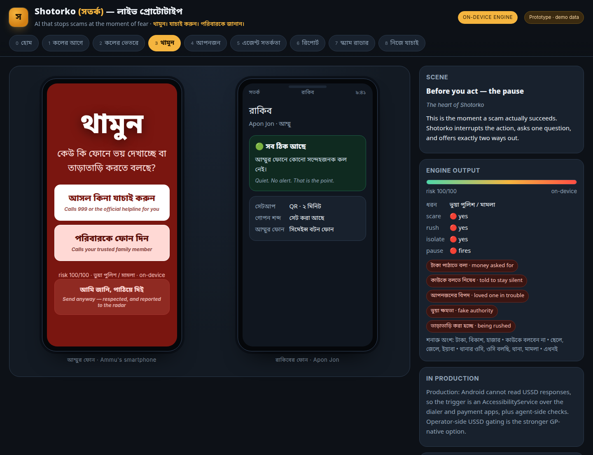
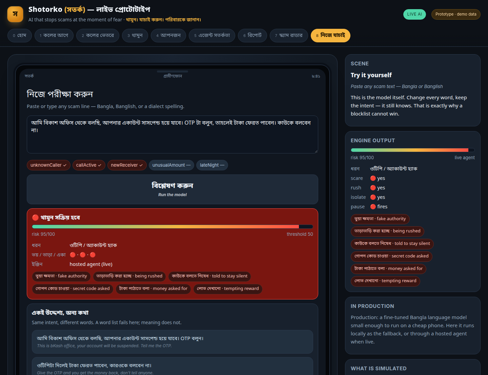

The 90 seconds when a phone scam is actually winnable. AI that warns a grandmother in Bangla, on any phone — before she sends the money.
[Name] · GP FutureMakers 2026 Concept Round · Prototype inside
The script is always the same. "আমি থানার ওসি" — your son was caught with yaba. Pay 30,000 taka now. Don't tell anyone.
Why it works
Who absorbs it: people with the least practice judging a call — older parents in district towns, semi-literate users, and anyone whose Bangla is a dialect no product was built for.
| What exists | Why it fails here |
|---|---|
| Carrier spam filters | Built for nuisance volume, not for a single persuasive human voice |
| Number blocklists | One new SIM costs ৳200; the script survives, the number doesn't |
| Bank / MFS fraud rules | They see the transfer, never the call that caused it |
| Awareness campaigns | They teach a list of phrases; scammers reword faster than campaigns print |
| Smartphone security apps | Useless on the Tk 800 button phone that is most at risk |
The gap: nobody intervenes between the call and the money, in Bangla, on the phone the victim actually owns.
Four moments, one continuous defence.
১. Before the call — one Bangla sentence plays in the network, before the phone rings. No app, no install, works on a button phone. ২. During the call — on-device listening understands intent. Nothing is recorded, nothing leaves the handset. ৩. থামুন — the pause — at the moment money or an OTP is about to move, one question appears, with exactly two buttons. ৪. After — the victim speaks what happened in Bangla; Shotorko writes a complaint that can actually be filed, and the report joins a Scam Radar that clusters numbers into networks.
Plus two layers around the person: আপনজন — a family alert set up in two minutes by QR — and the agent shop, where the shopkeeper gets a warning and one question to ask.
কেউ কি ফোনে ভয় দেখাচ্ছে বা তাড়াতাড়ি করতে বলছে? Is someone on the phone scaring you or rushing you?
[ আসল কিনা যাচাই করুন ] — calls 999 or the official helpline [ পরিবারকে ফোন দিন ] — calls the trusted family member
আমি জানি, পাঠিয়ে দিন — respected, and reported to the radar
Shotorko never blocks. The user always keeps the last button.

A blocklist cannot win. Scammers reword; a blocklist chases.
The model reads eight signals and the situation around them: authority · leverage · urgency · secrecy · credential · payment · reward · install × unknown caller · call in progress · first-time receiver · unusual amount · late night
The same words, different risk
| "টাকাটা পাঠিয়ে দিও" from a saved contact at noon | quiet |
| "টাকাটা পাঠিয়ে দিও, কাউকে বলো না" from a new number mid-call | pause |
Decided on-device, in Bangla, Banglish and dialect spelling. Small enough to run on a cheap Android handset. No audio stored, no audio uploaded. A hosted model handles only the generative part — turning a spoken story into a written complaint.
Prototype evidence: 69 backend checks pass offline · 5 reworded scam families all classified · 10 benign sentences, 0 false pauses in friendly context and 1 with every hostile flag forced on · threshold 50/100, and the pause additionally requires consent and an actual ask.

The moat is the network.
| Capability | Where it lives |
|---|---|
| Play a Bangla warning before the ring | Network announcement injection — no handset permission needed |
| Warn on a Tk 800 button phone | Happens in the network, so the device is irrelevant |
| Caller reputation at launch | GP's own call records: new SIM, fan-out pattern, report history |
| Stop the forwarding scam | USSD gating on *21 — GP-side, not app-side |
| The agent-shop checkpoint | Inside the MFS agent app GP already operates |
| Close the loop | GP fraud cell already receives these complaints |
Honest engineering constraints we designed around: Android cannot read USSD responses, so the on-device trigger is an AccessibilityService over the dialer and payment apps — or, stronger, operator-side gating. Live-call Bangla recognition on the handset is the hardest single piece in the plan and is where we'd start the R&D clock.
Direct impact
Prototype dashboard (DEMO DATA — simulated, not a field trial) 10,000 protected users · 1,284 scam attempts · 796 stopped · 62% interruption rate 412 pauses fired · 168 family alerts · 97 agent-shop warnings · 41s average pause 31 false alarms, counted on purpose — "ঠিক ছিল" feedback on every warning
Scale path
Weeks 1–4 — prove the classifier on real language Collect 2,000 real scam call recordings with consent from GP's fraud cell + police complaints. Fine-tune the small Bangla intent model. Publish a false-positive rate, not just a recall.
Weeks 5–8 — network slice, one district Caller reputation + pre-call Bangla announcement + a 999 helpline handoff. Feature-phone path only, so the pilot reaches the actual at-risk group. Target: 5,000 users, opt-in.
Weeks 9–12 — measure, then decide Interruption rate, money preserved, false-alarm rate, complaint-to-filing conversion.
What we're asking GP for
Stay alert. Tell the family.
Live prototype — no login, no install, works on a phone QR → https://abukawser.xyz
Nine screens, the whole journey: pre-call warning, live call listening, the থামুন pause, the family circle, the agent checkpoint, spoken report → filed complaint, and the Scam Radar.
On the site, press "▶ Play the story" — it runs the whole journey in under a minute. Then open "নিজে যাচাই" and type any scam line you've ever received, in Bangla or in Banglish. Two classifiers answer: the on-device one, which needs no network at all and is what ships first, and — flip "Live agent" — a hosted one making a real model call.